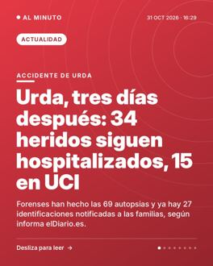
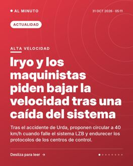
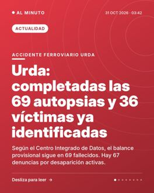
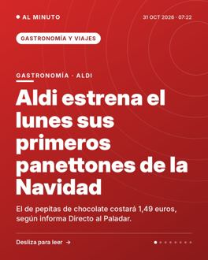

Cientos de vecinos protestan en Titulcia contra una incineradora
La planta de PreZero podría quemar 300.000 toneladas de residuos al año, a 1,5 km del casco urbano, según informa elDiario.es.
Ver en Instagram →Sábado 31 de octubre de 2026 · 34 noticias · actualizado a las 20:15
La planta de PreZero podría quemar 300.000 toneladas de residuos al año, a 1,5 km del casco urbano, según informa elDiario.es.
Ver en Instagram →Una jueza de Torrent envía a prisión al joven de 20 años detenido en Picanya, investigado por organización criminal.
Ver en Instagram →El arzobispo de Toledo presidió la ceremonia y leyó un mensaje del Papa León XIV, según informa El País.
Ver en Instagram →
Forenses han hecho las 69 autopsias y ya hay 27 identificaciones notificadas a las familias, según informa elDiario.es.
Ver en Instagram →El brote, declarado el 15 de mayo, afecta a ocho provincias. La OMS y la Unión Africana advierten de que no está bajo control.
Ver en Instagram →El ministro admite las caídas del sistema de seguridad mientras Semaf pide cambiar la norma que regula su uso.
Ver en Instagram →El aparcamiento regulado de Madrid suma 3.161 plazas y afectará a unas 75.500 personas, según el Ayuntamiento.
Ver en Instagram →El Gobierno de Tusk y el jefe del Estado, Nawrocki, chocan por la reforma judicial. La policía rodea el tribunal en Varsovia.
Ver en Instagram →Tras el accidente de Urda, los controladores de Atocha dicen que falta un tercio de la plantilla. Puente lo niega.
Ver en Instagram →
Tras el accidente de Urda, proponen circular a 40 km/h cuando falle el sistema LZB y endurecer los protocolos de los centros de control.
Ver en Instagram →
Según el Centro Integrado de Datos, el balance provisional sigue en 69 fallecidos. Hay 67 denuncias por desaparición activas.
Ver en Instagram →Hay un gran despliegue policial tras las detenciones de jóvenes vinculados al movimiento, que se ha organizado por mensajería.
Ver en Instagram →El ministro de Transportes dice que "dar la cara" es su forma de asumir responsabilidades tras el choque de trenes de Urda (Toledo).
Ver en Instagram →Juan Bravo pide que Sánchez asuma responsabilidades políticas tras el siniestro de Toledo, que según las fuentes deja 69 fallecidos.
Ver en Instagram →El sondeo del Gobierno vasco sitúa a la coalición por delante del PNV y con dos escaños más que en 2023.
Ver en Instagram →Sí abre tres días de alegaciones sobre la petición de Iustitia Europa de suspender el voto a los hijos de los nacionalizados.
Ver en Instagram →La operadora británica estudia recortar hasta una cuarta parte de su plantilla para reducir costes y aliviar su deuda, según Sky News.
Ver en Instagram →El selectivo cierra el mes con una caída del 3,98% y por debajo de los 18.700 puntos, según informan varios medios económicos.
Ver en Instagram →Las seis entidades del Ibex 35 presentan beneficios al alza, pero los inversores castigan su cotización, sobre todo a Santander y BBVA.
Ver en Instagram →Las entidades se adaptan a un BCE que mantiene los tipos en el 2,5%, pero podría subirlos en diciembre, según Expansión.
Ver en Instagram →Según los medios, la cuota media de una hipoteca variable sube unos 102 euros al mes pese a una tregua mínima del índice.
Ver en Instagram →Los trabajadores vuelven a manifestarse por las calles de Cartagena y reclaman un convenio "justo y digno".
Ver en Instagram →La circulación se cortó en las líneas R1 y RG1 y se restableció sobre las 23.50 horas, según la información publicada.
Ver en Instagram →La Aemet prevé chubascos fuertes en el Mediterráneo y nieblas densas en Lugo este sábado 31 de octubre.
Ver en Instagram →Un estudio de Modat Magnify detecta 2.766 sistemas solares españoles accesibles desde la red pública, el 35% del total analizado.
Ver en Instagram →El cofundador de Microsoft reclama a los gobiernos que impongan medidas de seguridad a la IA, según dijo a NBC News.
Ver en Instagram →La policía finlandesa examina si los trabajos en Muhos, con unas 330 hectáreas de bosque taladas, infringieron la ley de aguas.
Ver en Instagram →El sindicato envía a Valle Ares un escrito con medidas y pide que no se frenen las negociaciones abiertas, entre ellas 1.000 plazas de catedráticos.
Ver en Instagram →El bloqueo en el Consejo de Seguridad deja sin renovar la Minurso, cuyo mandato expira este sábado, tras 35 años de misión.
Ver en Instagram →Mediaset confirma el fallecimiento del periodista, de 43 años, dos días después del siniestro ferroviario de Toledo.
Ver en Instagram →Martín renuncia a correr en Sepang por su lesión y Márquez, segundo en la sprint que ganó Acosta, amplía a 19 puntos su ventaja.
Ver en Instagram →Según L’Équipe, el delantero del Bayern sumó 1.055 puntos y el del Madrid, 1.027. Lamine Yamal fue tercero con 881.
Ver en Instagram →Tuvo una estrella Michelin entre 2016 y 2024 y cierra su local tras una década, aunque la marca seguirá en catering y eventos.
Ver en Instagram →
El de pepitas de chocolate costará 1,49 euros, según informa Directo al Paladar.
Ver en Instagram →